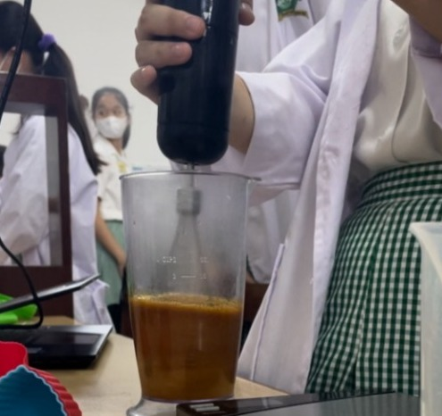
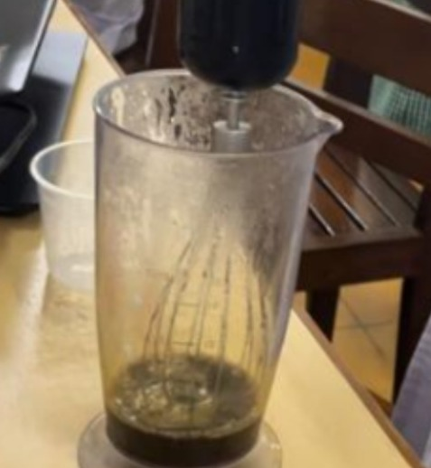
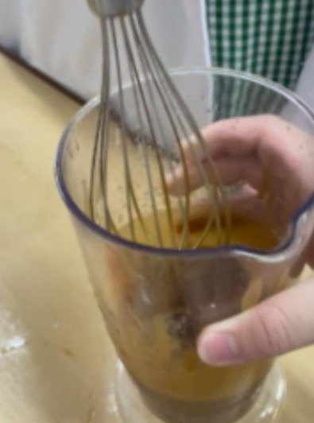

3.2.2 Prosedur Kerja Pembuatan Sabun Organik (Percobaan Pertama)
| No. |
Langkah Kerja Pembuatan Sabun Ekoenzim(Percobaan Pertama) |
Foto Langkah Kerja |
| 1. |
Menyiapkan alat dan bahan. Tidak lupa untuk memakai masker dan sarung tangan untuk menjaga sterilitas. |
 |
| 2. |
Memasukkan olive oil dan minyak kelapa ke dalam satu wadah. Mengaduk kedua cairan tersebut menggunakan blender sampai merata. |
 |
| 3. |
Memasukkan lye solution ke dalam campuran olive oil dan minyak kelapa lalu aduk sampai merata. |
 |
| 4. |
Memasukkan Ekoenzim ke dalam campuran lye solution dan olive oil. Aduk sampai merata |
 |
| 5. |
Membagi cairan yang sudah tercampur rata ke dalam dua wadah yang berbeda (nantinya akan menjadi dua layer) |
 |
| 6. |
Memasukkan charcoal ke dalam campuran lye solution dan olive oil yang akan menjadi layer pertama. |
 |
| 7. |
Memasukkan charcoal ke dalam layer pertama. Kemudian, mengaduk sampai merata. Memasukkan campuran ke dalam cetakan. |
 |
| 8. |
Memasukkan layer kedua (yang tidak diberi arang) ke dalam cetakan (di atas layer pertama). |
 |
3.2.3 Prosedur Kerja Pembuatan Sabun Ekoenzim (Percobaan Kedua)
| No. |
Langkah Kerja Pembuatan Sabun (Percobaan Kedua) |
Foto Langkah Kerja |
| 1. |
Menyiapkan alat dan bahan. Jangan lupa pakai masker dan sarung tangan untuk menjaga sterilitas. |
 |
| 2. |
Memasukkan 42 gr NaOH ke dalam wadah yang berisi ekoenzim. |
 |
| 3. |
Mengaduk menggunakan stik blender sampai campuran kedua bahan tersebut menjadi panas dan tercampur rata. |
 |
| 4. |
Menyiapkan alat dan bahan. Jangan lupa pakai masker dan sarung tangan untuk menjaga sterilitas. |
 |
| 5. |
Memasukkan 90 gr minyak kelapa ke dalam campuran NaOH dan ekoenzim. |
 |
| 6. |
Mengaduk minyak kelapa dengan campuran NaOH dan ekoenzim sampai mengental. |
 |
| 7. |
Memasukkan 20gr air yang sudah dimurnikan dan 15gr eko enzim kedua yang kedua ke dalam larutan. |
 |
| 8. |
Mengaduk kembali larutan tersebut sampai tercampur rata dan mengental. |
 |
| 9. |
Memasukkan pewarna makanan dan 5gr minyak esensial serai ke dalam larutan. |
 |
| 10. |
Mencampur seluruh bahan sampai merata. |
 |
| 11. |
Memasukkan larutan tersebut ke dalam cetakan (setengah dari tinggi cetakan) |
 |
| 12. |
Meratakan dan merapikan campuran dalam cetakan tersebut menggunakan spatula. |
 |